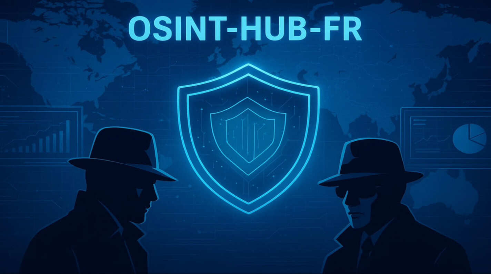
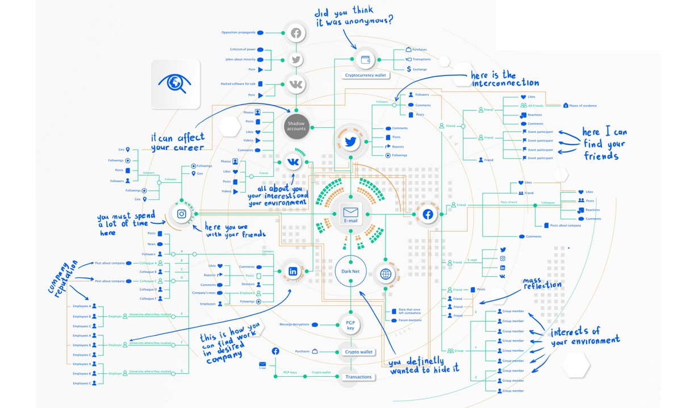

🇫🇷 Le projet OSINT-HUB-FR est une ressource pensée pour les étudiants et les débutants : il rassemble des outils, des méthodes et des guides pas à pas en français et parfois en anglais pour apprendre à collecter, analyser et vérifier des informations accessibles publiquement, le tout de manière éthique, progressive et pédagogique.
🇬🇧 The OSINT-HUB-FR project is a resource designed for students and beginners: it brings together tools, methods, and step-by-step guides in French (and sometimes in English) to learn how to collect, analyze, and verify publicly accessible information, all in an ethical, progressive, and educational manner.
📑 Table des matières
🧠 OSINT Ressources
✍️ Articles
🧭 Méthodes
📚 Livres (EN)
🖼️ Slides / PDF (FR)
📄 Slides / PDF (EN)
🎥 Vidéos & Podcast
🙏 Bible
🔧 Tools
🔓 Outils Open-Source (Performants & Peu Connus)
- Holehe - Vérifie si un email est associé à différentes plateformes web
- Recon-ng - Framework complet reconnaissance open-source
- TheHarvester - Collecte emails, subdomains, IPs publiques
- Bbot - Reconnaissance massive domaines, emails, IPs
- Harpoon - CLI tool threat intelligence & OSINT
- Gitdorker - Détecte fuites sensibles sur GitHub
- Subfinder - Énumération sous-domaines massif
- Knockpy - Énumération DNS sous-domaines
🧰 Boards
🧩 Plateformes
🔍 Autres Sources
🗄️ Bases de Données Publiques
🇫🇷 France
🌍 International
🛰️ Intelligence Géospatiale (GEOINT)
Imagerie Satellite & Cartographie
Ressources Géographiques
🔐 Privacy & OPSEC
🕵️♂️ OSINT Communauté
🇫🇷 Communautés FR
- OSINTFR 🟢 Actif
La principale communauté francophone OSINT.
Avec plus de 16 000 membres sur Discord.
Ce serveur est très actif et structuré autour des échanges, des formations, des défis collaboratifs, et de la veille.
- DEXY | Community 🟢 Actif
Communauté francophone centrée sur l’OSINT et la cybersécurité.
Entraide entre amateurs et professionnels, partage d’outils, méthodologies et retours d’expérience.
- Greysky (Discord) 🟢 Actif
Serveur francophone dédié à l’OSINT, à la cyberdéfense et à la veille technique.
Tutos, bots, discussions éthiques sont parmi les usages fréquemment cités.
- LeakWeb (Discord) 🟠 Peu actif
Communauté axée sur le partage de leaks, l’exposition de données publiques et l’OSINT technique.
Intéressant pour les analystes cherchant des ressources “dures” et des techniques avancées.
- OSINT PROTECT FR (Discord) 🔴 À vérifier
Communauté orientée “protection mutuelle par l’OSINT”.
Le serveur offre des canaux de discussion sur l’OSINT, le signalement d’incidents et la résilience numérique.
Activité incertaine ces derniers mois.
- Club OSINT & Veille – AEGE (Discord) 🟠 Peu actif
Initiative d’une association d’étudiants/ingénieurs (AEGE).
Objectif : créer un espace francophone d’OSINT / veille, de challenges internes et de partage d’actualités.
À vérifier, activité variable selon les périodes académiques.
- OSINTOPIA / OZINT (Plateforme + communauté) 🟢 Actif
Plateforme francophone d’OSINT, proposant des articles, challenges et espaces collaboratifs.
Souvent citée comme référence communautaire.
Vérifie s’ils ont un Discord ou des groupes de discussion associés.
🌍 Communautés EN
- OSINT Foundation 🟢 Actif
Organisation internationale dédiée à la professionnalisation du domaine OSINT.
Propose des ressources, standards et initiatives pour renforcer la reconnaissance du renseignement open source.
- Project Owl (Discord) 🟢 Actif
Communauté anglophone très active dédiée à la surveillance d’événements mondiaux via l’OSINT.
Idéale pour apprendre le monitoring et la vérification d’informations sur les réseaux sociaux.
- Faytuks News (Discord) 🟢 Actif
Espace de veille communautaire centré sur les conflits, la géopolitique et l’actualité internationale.
Les membres y partagent des analyses et vérifications visuelles issues de sources ouvertes.
- Overt Operator (Discord) 🟢 Actif
Communauté orientée sur les techniques OSINT, HUMINT et cyber threat intelligence.
Discussions techniques, partage de bases de données et exercices pratiques.
- OSINTIA (Forum) 🟠 Peu actif
Forum anglophone indépendant pour analystes OSINT.
Espace d’échanges sur les outils et la cartographie d’informations, mais peu d’activité récente.
- OSINT Ambition Forum 🔴 À vérifier
Communauté internationale pour chercheurs et passionnés OSINT.
L’activité du forum semble limitée ces derniers temps.
- HackerSploit Forum – Section OSINT 🟠 Peu actif
Forum éducatif créé par l’équipe HackerSploit.
Contient une section OSINT utile, mais les discussions sont sporadiques.
- Reddit /r/OSINT 🟢 Actif
L’un des espaces anglophones les plus actifs sur l’OSINT (100k+ membres).
Discussions variées sur la géolocalisation, la recherche d’identités et la vérification d’images.
- Meetup – Open Source Intelligence (USA) 🟢 Actif
Regroupe plusieurs communautés locales OSINT à travers les États-Unis.
Permet de participer à des ateliers, conférences et rencontres OSINT locales.
🕵️♂️ OSINT Formations
🎓 Formations gratuites
💼 Formations payantes
🕹️ Challenges FR
- ISFRED 🟢 Actif
Plateforme française de formation et de challenges OSINT.
Propose des parcours pédagogiques et des énigmes progressives autour de la recherche d’informations ouvertes.
- Osintopia / OZINT 🟢 Actif
Plateforme communautaire francophone dédiée à l’OSINT, regroupant des articles, formations et challenges pratiques à résoudre seul ou en équipe.
- The OSINT Project 🟠 Peu actif
Projet français proposant des défis OSINT, des ressources méthodologiques et des études de cas collaboratives.
Les challenges sont parfois ponctuels (vérifier la section “Événements”).
- CTF Challenge OSINT 🟢 Actif
Instance CTF francophone dédiée exclusivement à l’OSINT.
Organisée par la communauté OSINT-FR, elle propose des scénarios réguliers et un classement public.
- PredictaLab CTF 🔴 À vérifier
Plateforme française qui a hébergé des CTF et exercices OSINT à vocation pédagogique.
Le site reste en ligne, mais l’activité semble irrégulière ces derniers mois.
- Oscar Zulu 🟢 Actif
Plateforme d’OSINT proposant des challenges / enquêtes numériques (CTF) pour exercer ses compétences en recherche d’informations ouvertes.
Permet à la fois de s’inscrire, de s’authentifier, de progresser dans un scoreboard, et de participer à des investigations très variées, dans différents langues.
🕹️ Challenges EN
- Trace Labs — Search Party CTF 🟢 Actif
Organisation OSINT internationale à but non lucratif.
Organise régulièrement des CTF basés sur des enquêtes réelles de personnes disparues — “OSINT for good”.
- OSINT For All — The Unsolvable CTF 🟠 Peu actif
Projet communautaire proposant des énigmes et investigations OSINT.
Moins de mises à jour récentes mais toujours en ligne avec des ressources intéressantes.
- OSINT4Fun — Exercises & Advent Challenges 🟢 Actif
Site de défis OSINT en ligne (énigmes, images, coordonnées, etc.)
Publie régulièrement de nouveaux challenges (séries “Advent Calendar”).
- List of OSINT Exercises — Gralhix 🟢 Actif
Agrégateur de plateformes et CTF OSINT mondiaux (liens directs vers des défis actifs).
Bon point de départ pour trouver d’autres challenges anglophones.
- Maveris / OSINT CTFs & Write-ups 🟠 Peu actif
Challenges ponctuels organisés par Maveris, NahamCon, etc.
Activité non régulière mais write-ups très utiles pour s’entraîner sur des cas réels.
🕵️♂️ OSINT Jobs
🇫🇷 Entreprises françaises spécialisées en OSINT
Voici une liste d’entreprises françaises dont l’OSINT est le cœur d’activité ou un service majeur.
- Affinis Conseil – Renseignement d’affaires, OSINT & HUMINT, veille stratégique. Site officiel
- Redintel – Plateforme d’analyse OSINT & Darkweb, détection de menaces. Site officiel
- Basileak (par Adacis) – Solution souveraine d’investigation et d’analyse OSINT. Site officiel
- Bearops – Sécurité offensive, investigations OSINT, audit d’exposition numérique. Présentation Wikipédia
- Hacker Privé – Enquêtes OSINT, réputation numérique, due diligence digitale. Site officiel
- XMCO (Paris) – Cybersécurité & OSINT. Analyste Cybercriminalité/Darkweb (CDI). Site officiel
- Ariane Group (Île-de-France) – Intelligence économique et cybersécurité. Site officiel
- Epieos (Paris) – Leader français en outils OSINT (analyse d’e-mails, métadonnées, etc.). Site officiel
- Elephantastic (Île-de-France) – Enquêtes corporate & anti-fraude, renseignement open source. Site officiel
- Aleph-Networks (Paris) – Deeptech française, SaaS OSINT & veille sur les zones grises du web. Site officiel
- Manufacture Française d'OSINT – Due diligence, veille stratégique, formation OSINT. Site officiel
- Sopra Steria (France) – Cybersécurité, analyse de menace & renseignement. Site officiel
- Vélite (Paris) – Intelligence économique, investigations corporate, OSINT. Site officiel
- Sahar (Paris) – Cabinet d’analyse, veille stratégique et OSINT institutionnel. Site officiel
🌍 Entreprises internationales spécialisées en OSINT
Voici une sélection d’entreprises reconnues à l’international pour leurs services, outils et formations en OSINT.
- Greydynamics – Renseignement stratégique, analyse géopolitique, OSINT & cyber threat intelligence. Site officiel
- SocialLinks – Suite d’outils OSINT professionnels intégrés à Maltego et i2 Analyst’s Notebook. Site officiel
- PredictaLab – Investigations, analyses OSINT et renseignement d’affaires à l’échelle internationale. Site officiel
- Molfar OSINT Agency – Enquêtes, renseignement privé, vérification militaire, formation OSINT (Ukraine / international). Site officiel
- Semantic Visions – Analyse média, détection de tendances, veille géopolitique & conformité (République tchèque). Site officiel
- OSINT Combine (NexusXplore) – Logiciels et formations OSINT destinés aux gouvernements et entreprises. Site officiel
- Golden Owl – Intelligence open source pour due diligence, réputation et analyse de risque. Site officiel
- Global OSINT – Services globaux : veille concurrentielle, analyse de risques, formation OSINT. Site officiel
- OSINT Industries (UK) – Plateforme de renseignement en temps réel pour les secteurs gouvernementaux et privés. Site officiel
- Farallon, LLC (USA) – Investigations et analyse OSINT multi-sources, due diligence, monitoring réputationnel. Site officiel
- TextOre – Analyse stratégique et géopolitique, opérations d’influence, veille multilingue. Site officiel
- OSINT SA – Expertise en renseignement stratégique, analyse OSINT, cybersécurité et veille informationnelle. Site officiel
🏢 Recherche Emploi
🎖️ Bonus
OSINT MAP

Source :
https://github.com/SocialLinks-IO/assets/blob/main/Email%20MindMap.jpg
Licence
OSINT-HUB-FR has been released under
CC BY-NC-SA 4.0 :
You can use it for research and training purposes; however, commercialization is not authorized.
All documents are avalaible in open source access:
📌 Dernière mise à jour : Novembre 2025
Contributions bienvenues via Pull Request.